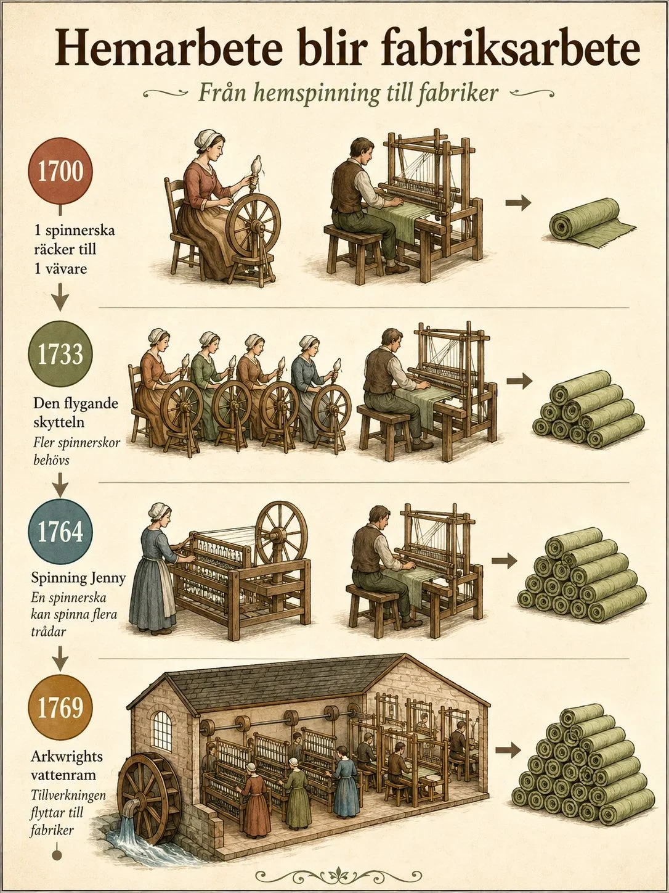
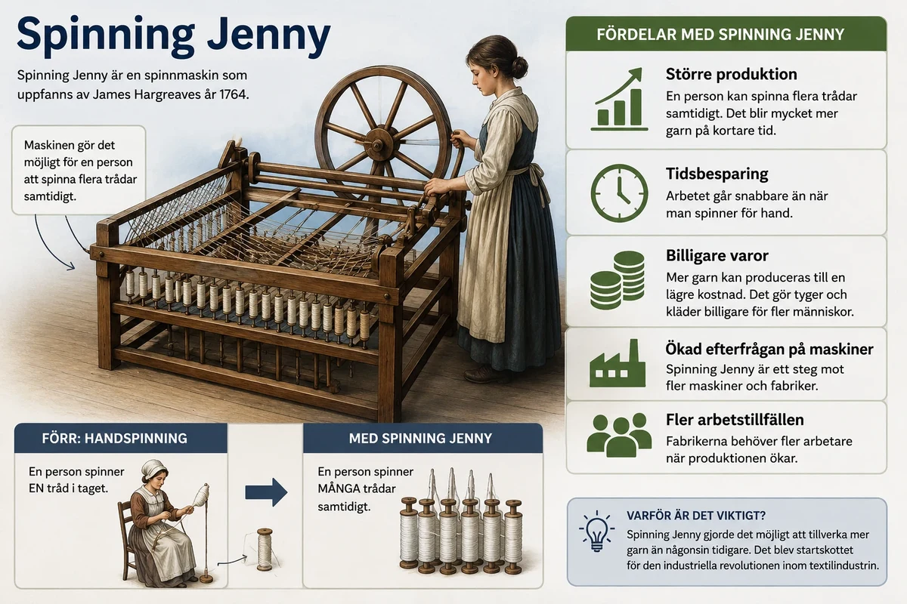
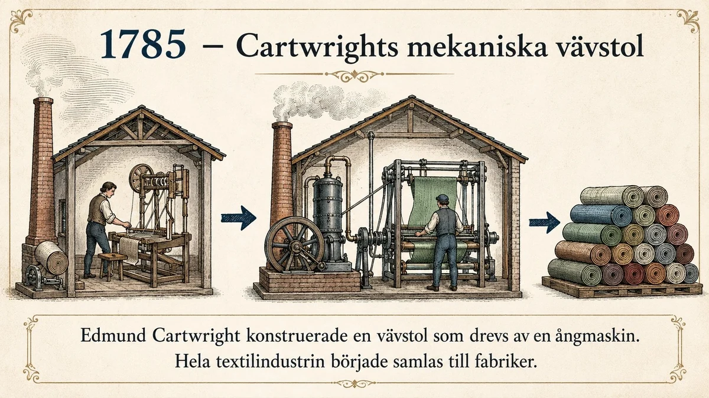
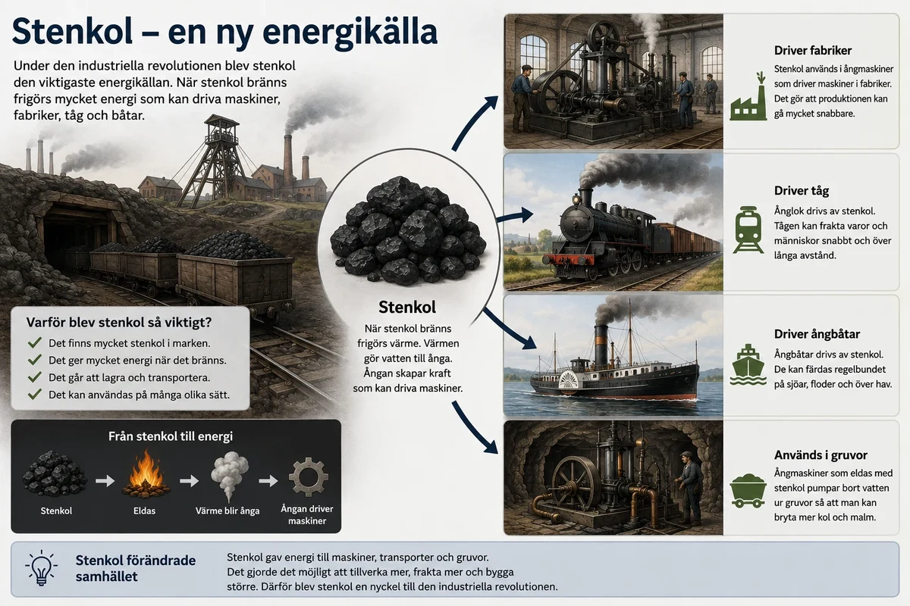
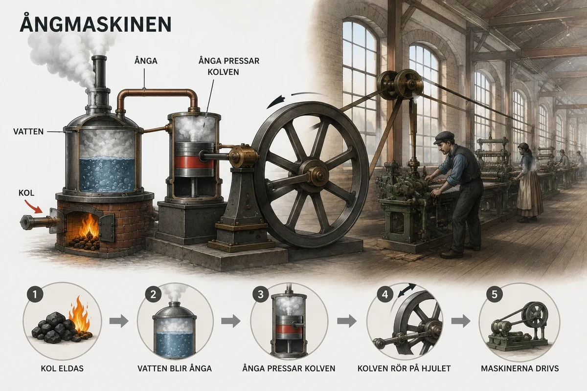
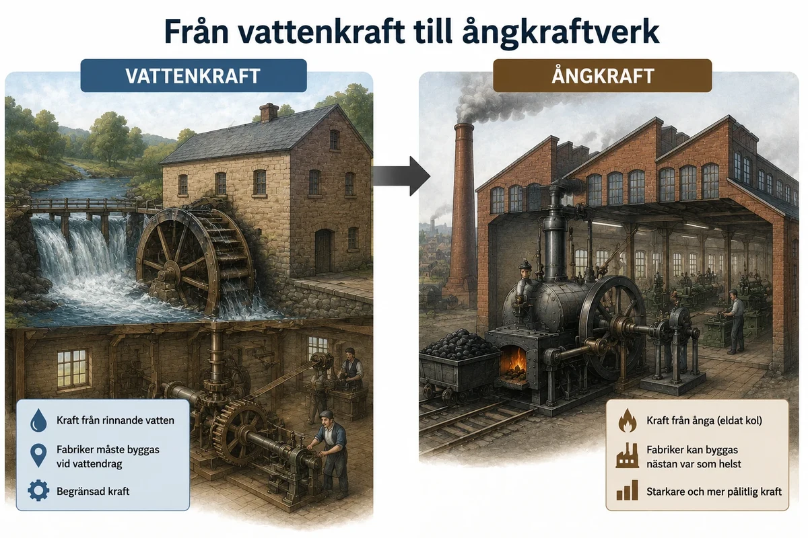

— maskinerna, stenkolet, ångmaskinen och transporterna som drev fram fabriken —
Den industriella revolutionen handlade om att människor började tillverka varor på ett nytt sätt. Tidigare gjordes mycket arbete för hand, hemma eller i små verkstäder. Under den industriella revolutionen flyttades produktionen till fabriker. I fabrikerna fanns stora maskiner, många arbetare och tydlig arbetsledning.
För att fabrikerna skulle kunna växa behövdes ny teknik. Det behövdes maskiner som kunde arbeta snabbare, energi som kunde driva maskinerna och transporter som kunde flytta råvaror och färdiga varor.
Den industriella revolutionen handlade om att människor började tillverka varor på ett nytt sätt. Tidigare hade mycket arbete gjorts för hand, hemma hos människor eller i små verkstäder. Under den industriella revolutionen började produktionen i stället flyttas till fabriker. I fabrikerna fanns stora maskiner, många arbetare och en tydlig arbetsledning. Där kunde man tillverka mycket mer än tidigare.
För att fabrikerna skulle kunna växa behövdes ny teknik. Det räckte inte längre att människor arbetade med enkla redskap för hand. Man behövde maskiner som kunde arbeta snabbare, energikällor som kunde driva maskinerna och transporter som kunde flytta råvaror och färdiga varor. Därför blev den tekniska utvecklingen en mycket viktig orsak till den industriella revolutionen.
En viktig förändring var nya maskiner inom textilindustrin. Textilindustrin tillverkade garn, tyg och kläder. Tidigare spann och vävde människor för hand. Det tog lång tid. Med nya maskiner kunde man tillverka mycket mer på kortare tid.
Ett exempel var Spinning Jenny. Det var en spinnmaskin som gjorde att en arbetare kunde spinna flera trådar samtidigt. Det gjorde produktionen snabbare. Maskiner som Spinning Jenny visar hur arbetet förändrades från handarbete till maskinarbete.
Maskinerna gjorde också att produktionen samlades i fabriker. Många maskiner var stora och dyra. De behövde dessutom kraft från vatten eller ånga. Därför blev det enklare att samla maskiner, arbetare och energi på samma plats.



En av de viktigaste förändringarna var att nya maskiner började användas i produktionen. Det märktes särskilt inom textilindustrin, alltså tillverkningen av garn, tyg och kläder. Före industrialiseringen spann och vävde många människor för hand. Det tog lång tid och produktionen blev begränsad.
Ett viktigt exempel på en ny maskin var Spinning Jenny. Det var en spinnmaskin som gjorde att en arbetare kunde spinna flera trådar samtidigt. Tidigare kunde en person bara spinna en tråd i taget. Med Spinning Jenny kunde samma person producera mycket mer garn på kortare tid.
Det viktiga är inte bara själva maskinen, utan vad den visar. Den visar att arbetet började förändras från handarbete till maskinarbete. När maskinerna blev fler kunde produktionen öka kraftigt. Det gick snabbare att tillverka varor och varje arbetare kunde producera mer än tidigare.
Detta ledde också till att produktionen började samlas i fabriker. Många maskiner var stora och dyra. De behövde dessutom kraft från vatten eller ånga. Därför blev det enklare att samla maskiner, arbetare och energi på samma plats. På så sätt blev maskinerna en viktig del av övergången från hantverk och hemarbete till fabrikssystem.
Det är ingen slump att den industriella revolutionen började just i textilindustrin, och att just spinnmaskinerna blev dess första stora genombrott. Tyg behövde alla människor, efterfrågan var enorm, råvaran bomull kunde importeras i mängd, och själva arbetet — att spinna tråd och väva tyg — var enkelt nog att härma med mekanik. Men det verkligt fascinerande är inte en enskild maskin, utan hur uppfinningarna satte igång en kedjereaktion där varje förbättring tvingade fram nästa.
Kedjan börjar redan 1733, då John Kay uppfann den "flygande skytteln" som lät en vävare väva dubbelt så snabbt. Plötsligt vävde man fortare än spinnarna hann spinna tråd — det uppstod en flaskhals i spinningen. Svaret kom 1764 med James Hargreaves Spinning Jenny, som lät en arbetare spinna många trådar samtidigt i stället för en. Kort därpå byggde Richard Arkwright sin water frame (1769), en spinnmaskin driven av vattenkraft och stark nog för en fabrik, och Samuel Crompton kombinerade 1779 det bästa ur båda i "the mule". Nu spann man i stället fortare än man hann väva — flaskhalsen hade flyttat tillbaka till vävningen. Och därför kom 1785 Edmund Cartwrights mekaniska vävstol, som mekaniserade även vävningen. Spinning drev fram vävning som drev fram spinning: en tävlan mellan de två momenten som steg för steg drog in hela textiltillverkningen i fabriken.
Det djupare mönstret här är värt att lägga på minnet, för det gäller teknik i allmänhet: en uppfinning löser sällan ett problem utan att skapa ett nytt. När en del av en process snabbas upp uppstår en obalans mot de delar som inte hängt med, och den obalansen blir i sin tur drivkraften bakom nästa uppfinning. Teknisk utveckling är därför inte en rad lösryckta genidrag, utan en kedja där varje länk drar den nästa.
Maskinerna förändrade också vem som utförde arbetet, och till vilket pris. En skicklig handspinnare hade övat i åratal; en Spinning Jenny kunde skötas av ett barn. Yrkeskunnandet flyttade från människan till maskinen — precis den utveckling du mötte redan i manufakturen, men nu fullbordad. Det gjorde arbetet billigare och arbetaren lättare att ersätta, och för de gamla hantverksskickliga hemarbetarna blev det en katastrof. Många handvävare, som förr haft en stolt och anständig försörjning, konkurrerades ut och sjönk ner i fattigdom.
Därför väckte maskinerna också motstånd. Åren kring 1811–1816 gick grupper av desperata textilarbetare — kallade ludditer — till angrepp mot själva maskinerna och slog sönder dem, i protest mot att deras arbete och löner rycktes undan. Att de valde att krossa maskinerna säger något viktigt: för samtidens människor var det ingen självklarhet att den nya tekniken var ett framsteg. För fabriksägaren betydde spinnmaskinen vinst, för konsumenten billigt tyg — men för den utkonkurrerade hantverkaren betydde den ruin. Vem tekniken gagnar och vem den drabbar är sällan samma person, och den frågan möter du på nära håll i temat om arbetskraften.
Textilmaskinerna var alltså mer än snillrika uppfinningar. De var den gnista som satte hela industrialiseringen i rörelse — och samtidigt det första tydliga exemplet på dess dubbelhet: en väldig ökning av produktionen, köpt till priset av gamla yrken och människors trygghet.
Storleken på språnget är svår att ta in. En arbetare vid de nya maskinerna kunde spinna hundratals gånger mer garn än en handspinnare med sin slända, och priset på bomullstyg föll så kraftigt att det som förr varit lyx blev var mans egendom. Följden blev att Storbritannien på några årtionden förvandlades till världens verkstad: brittiskt bomullstyg översvämmade marknaderna över hela jordklotet, och råbomullen som matade maskinerna kom i sin tur från slavplantagerna på andra sidan Atlanten. Här knyts trådarna samman på ett obehagligt sätt — den blänkande nya maskintekniken i Lancashire och det brutala tvångsarbetet på bomullsfälten var två delar av samma system, precis som du såg i temat om råvarorna. Textilmaskinen var med andra ord inte bara en teknisk sensation, utan navet i ett globalt nät av handel, kapital och ofrihet.
En annan viktig faktor var stenkol. Stenkol är ett bränsle som finns i marken. När man eldar stenkol får man mycket energi. Den energin kunde användas för att driva maskiner, fabriker, gruvor och transporter.
Tidigare hade människor ofta använt kraft från människor, djur, vind och vatten. Men vattenkraft fungerade bara där det fanns rinnande vatten. Stenkol gjorde att fabriker kunde byggas på fler platser och få jämnare energi.

Maskiner behöver energi för att fungera. Före den industriella revolutionen kom mycket kraft från människor, djur, vind och vatten. En kvarn kunde till exempel drivas av vattenkraft, och många arbeten gjordes fortfarande med muskelkraft. Men när produktionen skulle bli större räckte detta inte längre. Vattenkraften hade också en viktig begränsning: den var inte alltid tillförlitlig. Om det var ont om vatten, till exempel under torra perioder, kunde kraften minska. Den var också beroende av årstider och nederbörd. Därför behövdes en energikälla som kunde ge jämnare kraft och användas på fler platser.
Därför blev stenkol mycket viktigt. Stenkol är ett fossilt bränsle som finns i marken. När man eldar stenkol frigörs mycket energi. Den energin kunde användas för att driva maskiner och skapa kraft till fabriker.
Detta var en stor förändring. När människor började använda mer stenkol blev de mindre beroende av naturens direkta kraft, till exempel forsar och vattenfall. Energin kunde i stället skapas genom att elda kol. Det gjorde det möjligt att driva fler och större maskiner.
Stenkol blev därför en av industrins viktigaste energikällor. Det behövdes till ångmaskiner, fabriker, gruvor, järnframställning, tåg och ångbåtar. Utan stenkol hade den industriella revolutionen inte kunnat växa lika snabbt.
Bakom varje maskin och varje ångmaskin fanns en tyst men helt avgörande förutsättning: en ny sorts energi. För att förstå varför stenkolet blev så omvälvande måste man se vad det ersatte — och vilken osynlig mur det rev.
Före industrialiseringen kom nästan all kraft från levande källor: människors och djurs muskler, vindens tryck mot en segel- eller kvarnvinge, och vattnets fall genom ett vattenhjul. Allt detta hade en gemensam begränsning: det var i grunden solenergi, fångad här och nu, och därför begränsat av hur mycket sol, vind och vatten naturen råkade ge. Vattenkraften var dessutom bunden till platsen — en fabrik måste ligga vid en fors — och opålitlig, eftersom torka eller frost kunde strypa kraften. Så länge industrin var beroende av sådana källor fanns det ett tak för hur mycket den kunde växa.
Stenkolet sprängde det taket, och det är den djupare innebörden av "energiövergången". Kol är nämligen inte färsk solenergi utan lagrad sådan — rester av växter som fångade solljus för hundratals miljoner år sedan och sedan pressats samman i marken. I ett enda ton stenkol finns energi som skulle ha krävt enorma arealer skog eller åratal av vattenflöde. För första gången i historien fick mänskligheten tillgång till ett energiförråd som för samtiden verkade nästan outtömligt, och som kunde grävas fram och flyttas dit man ville. Den som förstår denna övergång — från en "organisk" ekonomi begränsad av levande natur till en "fossil" ekonomi baserad på uppgrävt bränsle — förstår en av de mest grundläggande vändpunkterna i människans historia.
Kolet var dessutom sammanflätat med järnet i en märklig, självförstärkande knut. Kol behövdes för att smälta järn — genom den koksmetod du mött i temat om råvarorna — och när engelsmannen Henry Cort på 1780-talet utvecklade den så kallade puddelprocessen kunde man dessutom framställa smidbart järn av god kvalitet i stora mängder med hjälp av kol. Rikligt med billigt järn gav i sin tur maskiner, skenor och ångpannor. Men det underligaste är att järnet och ångmaskinen behövdes för att komma åt mer kol: när gruvorna grävdes allt djupare fylldes de av vatten, och de första ångmaskinerna byggdes just för att pumpa upp det vattnet ur kolgruvorna. Kol drev maskinen som tömde gruvan som gav mer kol. Sällan har en råvara så tydligt bitit sig själv i svansen på ett sätt som lyfte hela ekonomin.
Men samma kol som lyfte industrin bär också på ett långt mörkare arv, och det är omöjligt att förbigå idag. När vi eldar fossilt bränsle frigörs koldioxid, och det var med stenkolets tidsålder som människan på allvar började förändra atmosfärens sammansättning. Den globala uppvärmning som är vår tids stora ödesfråga har sin allra första början i de rykande skorstenarna över Manchester och Birmingham. Stenkolet är därför ett dubbelt arv: motorn i det välstånd vi lever i, och samtidigt startpunkten för ett miljöproblem vi ännu kämpar med att lösa.
Att det blev just Storbritannien som gick först hängde till stor del ihop med att landet råkade sitta på väldiga, lättillgängliga kolfyndigheter — en geologisk lottovinst. Medan andra länder fortfarande var bundna till ved och vattenkraft kunde britterna elda kol i en skala ingen tidigare skådat, och den brittiska kolproduktionen sköt i höjden årtionde för årtionde. Men energin hade ett pris som betalades i människoliv. Nere i de mörka, trånga gruvgångarna arbetade män, kvinnor och barn under fruktansvärda förhållanden — i ständig fara för ras, översvämning, kvävande gaser och gruvgasexplosioner. Barn så små att de rymdes i de smalaste gångarna kröp där nere i timmar för att öppna luckor eller dra kolvagnar. Det välstånd som kolet skapade byggde alltså på ett hårt och farligt slit långt under jordytan, ett människopris som du får möta närmare i temat om arbetskraften.
Den viktigaste uppfinningen var ångmaskinen. Ångmaskinen använde ofta stenkol för att värma vatten. När vattnet blev till ånga skapades kraft. Den kraften kunde driva maskiner i fabriker.
James Watt förbättrade ångmaskinen under 1700-talet. Hans förbättringar gjorde att ångmaskinen blev mer användbar. Den kunde användas i fabriker, gruvor, tåg och båtar. Ångmaskinen gjorde att fabriker inte längre behövde ligga vid forsar och vattenfall.


En av de mest betydelsefulla uppfinningarna under den industriella revolutionen var ångmaskinen. Ångmaskinen fungerade genom att man eldade bränsle, ofta stenkol, för att värma vatten. När vattnet blev till ånga skapades kraft. Den kraften kunde sedan användas för att driva maskiner i fabriker.
James Watt förbättrade ångmaskinen under 1700-talet. Han uppfann inte den första ångmaskinen, men hans förbättringar gjorde den mer användbar och effektiv. Det gjorde att ångmaskinen kunde användas på fler områden än tidigare. Den blev därför en viktig del av den tekniska utvecklingen under industrialiseringen.
Ångmaskinen var särskilt viktig eftersom den gjorde fabrikerna mindre beroende av vattenkraft. Tidigare behövde många fabriker ligga nära rinnande vatten, till exempel vid en fors. Med ångmaskinen kunde fabriker byggas på fler platser, till exempel nära städer, hamnar, kolgruvor eller där det fanns gott om arbetskraft. Ångmaskinen användes också i gruvor, där den kunde pumpa bort vatten så att man kunde bryta mer kol och järn.
Senare användes ångmaskinen även i transporter. Den drev ånglok och ångbåtar, vilket gjorde att människor och varor kunde transporteras snabbare och i större mängder än tidigare. Ett viktigt samband är därför att stenkol gav energi till ångmaskinen, ångmaskinen drev maskiner och maskinerna gjorde att fabrikerna kunde producera mer.
Om man skulle välja en maskin som symbol för hela den industriella revolutionen, skulle det vara ångmaskinen — och det med rätta, för den gjorde något som ingen maskin gjort förut: den förvandlade eld till rörelse. Genom att elda stenkol värmde man vatten till ånga, och ångans tryck sattes i arbete. För första gången hade människan en kraftkälla som varken tröttnade, sov eller behövde en flod att stå vid.
Ångmaskinen uppfanns inte i ett enda ögonblick. Redan 1712 byggde Thomas Newcomen en fungerande ångmaskin, men den var klumpig och slukade oerhörda mängder kol — den dög mest till att pumpa vatten ur gruvor. Det avgörande steget togs av skotten James Watt, som från 1760-talet förbättrade konstruktionen i grunden. Hans viktigaste påfund var en separat kondensor, som gjorde maskinen långt bränslesnålare, och senare en mekanism som omvandlade kolvens fram- och återgående rörelse till en roterande rörelse. Just det sista var revolutionerande: en snurrande axel kunde driva vilket maskineri som helst — spinnmaskiner, vävstolar, valsverk. Tillsammans med affärsmannen Matthew Boulton satte Watt maskinerna i storskalig produktion, och deras företag spred ångkraften över landet. Watt fick också ge namn åt både enheten "hästkraft", som han myntade för att förklara maskinens styrka, och åt den moderna effektenheten watt.
Men det tekniskt geniala är inte hela poängen. Ångmaskinens verkligt omvälvande följd var att den befriade industrin från geografin. Så länge fabriker drevs av vattenhjul måste de ligga utspridda längs forsar och älvar, ofta långt från både arbetare och kunder. Med ångmaskinen kunde en fabrik byggas var som helst — helst där det fanns kol, arbetskraft och marknader, alltså i och kring städerna. Därför började fabrikerna klumpa ihop sig i stora industristäder, och den enorma inflyttning dit — urbaniseringen — som du möter i temana om arbetskraften och konsekvenserna, drevs i hög grad av just denna frigörelse. Ångmaskinen ritade om kartan över var människor bodde och arbetade.
Ångmaskinen var dessutom vad man kan kalla en universalteknik: en uppfinning som inte löser ett enda problem utan öppnar dörren till otaliga. Samma grundidé kunde driva en textilfabrik, pumpa en gruva, valsa järn — och snart också sätta hjul och propellrar i rörelse. När ångmaskinen monterades på räls föddes ånglok och järnväg; när den sattes i ett skrov föddes ångbåten. Få uppfinningar har grenat ut sig i så många riktningar, och det är därför ångmaskinen brukar kallas industrialiseringens motor i både bokstavlig och bildlig mening.
Spridningen tog dock tid, och det säger något om hur teknik och ekonomi hänger ihop. Watts patent var strängt bevakat, och så länge det gällde fick få andra bygga liknande maskiner — vilket gav Boulton och Watt stora vinster men samtidigt bromsade utvecklingen något. När patentet löpte ut kring år 1800 exploderade i stället tillverkningen: nu kunde vem som helst bygga och förbättra ångmaskiner, och de spred sig med rasande fart genom fabrik efter fabrik. Antalet maskiner och den samlade kraft de utvecklade mångdubblades under de följande årtiondena. Det verkligt nya, sett i det stora perspektivet, var att kraft för första gången hade frikopplats från både plats och väder. Muskeln tröttnar, vinden mojnar, forsen fryser — men ångmaskinen levererade jämn, kontrollerbar kraft dygnet runt, året om, precis där man behövde den. Människan hade fått en energitjänare som lydde order, och det förändrade vad som över huvud taget var möjligt att bygga och tillverka.
Man kan slutligen se ångmaskinen som slutklämmen på en lång logisk kedja genom hela detta tema. Nya maskiner krävde kraft; vattenkraften räckte inte till; stenkolet gav energin; och ångmaskinen var det som förvandlade den energin till användbar rörelse. Kol utan ångmaskin är bara en varm sten; en maskin utan kraft är bara stilla metall. Det var föreningen av de två — bränslet och motorn — som verkligen satte industrisamhället i rörelse, och som gör att vi ännu idag mäter kraft i watt efter mannen som fulländade den.
Transporterna blev också bättre. Först förbättrades vägar och kanaler. På kanaler kunde man frakta tunga varor billigare. Sedan blev järnvägen mycket viktig. Tåg kunde frakta både människor och varor snabbt och i stora mängder. Ångbåtar gjorde transporter på floder och hav snabbare.
Den industriella revolutionen handlade inte bara om att tillverka fler varor. Varorna behövde också transporteras. Råvaror som bomull, kol och järn behövde komma till fabrikerna. Färdiga varor behövde sedan fraktas vidare till kunder och marknader.
Därför blev bättre transporter mycket viktiga. Först förbättrades många vägar. Det gjorde det lättare att resa och transportera varor med häst och vagn. Men vägtransporter var fortfarande ganska långsamma och dyra, särskilt när man skulle flytta tunga varor.
Därför blev kanaler viktiga under den tidiga industrialiseringen. På kanaler kunde man transportera stora och tunga mängder varor billigare än på vägar. Kol, järn och andra råvaror kunde fraktas till fabriker, och färdiga varor kunde skickas vidare.
Den största förändringen kom med järnvägen. När ångmaskinen började användas i lok kunde tåg transportera både människor och varor mycket snabbare än tidigare. Järnvägarna band ihop gruvor, fabriker, städer och hamnar. Det gjorde att industrin kunde växa ännu mer.
Även ångbåtar blev viktiga. De gjorde transporter på floder, kanaler och hav snabbare och säkrare. Tidigare var fartyg ofta beroende av vind, men ångbåtar kunde gå mer regelbundet.
Bättre transporter gjorde alltså att hela samhället knöts ihop. Råvaror kunde komma till fabrikerna, varor kunde säljas på större marknader och människor kunde flytta dit det fanns arbete.
En fabrik kan tillverka aldrig så mycket, men det är till ingen nytta om råvarorna inte kan komma in och de färdiga varorna inte kan komma ut. Transporterna var därför industrisamhällets blodomlopp, och den revolution som skedde i hur människor och gods rörde sig var lika viktig som maskinerna själva — fast den syns sällan lika tydligt i historieböckerna.
Utvecklingen gick i tre steg, där vart och ett löste det föregåendes brister. Först förbättrades vägarna: nya, hårdare vägbanor gjorde det snabbare att färdas med häst och vagn. Men landsvägar förblev dyra och långsamma för tunga laster som kol och järn. Därför kom nästa steg — kanalerna. Genom att gräva vattenvägar kunde man dra pråmar lastade med väldiga mängder tungt gods för en bråkdel av kostnaden. Hertigen av Bridgewaters kanal, öppnad 1761 för att frakta kol till Manchester, halverade kolpriset i staden och utlöste en veritabel "kanalfeber" där nätet av kanaler snabbt band samman landets gruvor, fabriker och städer.
Men den verkligt omvälvande förändringen kom när ångmaskinen sattes på hjul. När George Stephensons lok "Rocket" 1829 vann en berömd tävling, och Liverpool–Manchester-järnvägen öppnade 1830, inleddes järnvägsåldern. Nu kunde både gods och människor fraktas snabbare, billigare och över längre avstånd än någon tidigare kunnat drömma om. Och järnvägen var på ett självförstärkande sätt industrins eget barn: den byggdes av järn, drevs av kol och ångmaskiner, och blev därmed en gigantisk kund åt just de industrier den tjänade. Efterfrågan på räls, lok och broar satte fart på järn- och kolindustrin i en ny våg — teknik som skapade efterfrågan på mer teknik.
Följderna sträckte sig långt bortom ekonomin och in i själva sättet att uppleva världen. Före järnvägen levde de flesta människor hela sitt liv inom några mils omkrets; nu kunde en vanlig människa resa längre på en dag än tidigare på en vecka. Avstånd krympte. Marknader som förr varit lokala smälte samman till en enda nationell marknad, där en vara tillverkad i norr kunde säljas i söder nästa dag. Järnvägen tvingade till och med fram en gemensam tid: förr hade varje stad sin egen soltid, men tidtabellerna krävde att klockorna ställdes lika över hela landet — den standardiserade tid vi tar för självklar idag är delvis en uppfinning framtvingad av tåget.
Järnvägen förändrade också vanliga människors liv på ett nästan demokratiskt sätt. För första gången kunde inte bara de rika resa. Arbetarfamiljer kunde ta tåget till kusten på en ledig dag, tidningar och post nådde hela landet på timmar i stället för dagar, och människor från skilda hörn av riket möttes och blandades som aldrig förr. På så vis bidrog järnvägen till att forma en gemensam nationell kultur — man började känna sig som en del av samma land. Och rörelsen stannade inte vid landgränserna: när ångmaskinen också sattes i fartyg krympte haven. Ångbåtar och järnvägar tillsammans vävde samman en global ekonomi, där råvaror, varor och människor kunde flyttas över hela jorden. Det var med dessa transportmedel som miljoner européer under 1800-talet kunde utvandra till Amerika — bland dem de många svenskar vars historia du möter i temat om Sverige. Tekniken flyttade inte bara gods; den flyttade hela folk.
Transporterna är därför den passande slutpunkten på temat om tekniken, eftersom de knyter ihop allt det andra. Kolet, järnet och ångmaskinen möttes i järnvägen; råvaror, fabriker och marknader länkades samman i ett enda rörligt system. Och tråden löper vidare: när du längre fram läser om Sveriges industrialisering är det just järnvägen som blir en av nycklarna till hur även vårt eget land drogs in i den nya tiden. Tekniken hade inte bara gjort det möjligt att tillverka mer — den hade gjort det möjligt att binda samman en hel värld.
Laddar övningskort…
Laddar frågor ...